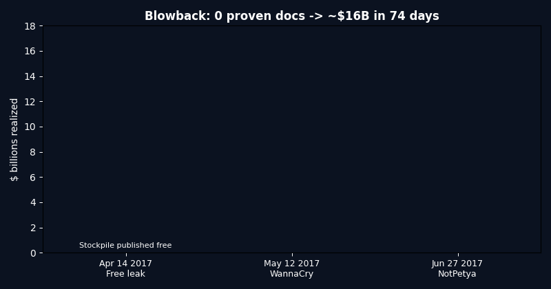

MIT license12/12 claims confirmed4.67/5 evidence$16B blowback midDocker reproducibleGitHub Pages ready
From Allegation to Blowback
A reproducible investigation of the Huawei–NSA backdoor dispute (2007–2026).
We test 12 claims end-to-end — intercepted routers, a years-long server intrusion, shelf-ready implants, a decade-long independent audit, and a leaked stockpile that caused global damage — against public documents and live market data.
Bottom line in 30 seconds: after years of privileged access plus a decade of source-level audit, zero public documents prove an intentional backdoor in the accused vendor — while the accuser's own stockpiled tools leaked and caused over $10 billion in damage in weeks. A secret door you open today gets stolen tomorrow.
Live demo GIF: assets/demo.gif · Screenshots: assets/preview-*.png · One command: docker compose up --build
🎬 Demo — what you will see
1. Run one command
docker compose up --build fetches SEC, Yahoo and NVD live (with offline snapshots), scores 12 claims, and writes 5 benchmark files.
2. Read the verdicts
verification_report.json = 12/12 confirmed. blowback_benchmark.json = ~$16B realized vs 0 proven. cve_benchmark.json = Huawei 1062 vs Cisco 6985 live.
3. Learn interactively
Use the quiz below. Wrong answers explain why — you finish knowing more than most interview candidates about supply-chain security.

If the GIF does not load, open preview.html locally or via GitHub Pages (see Pages section).
🕰 Timeline — let's work this out step by step
2007 — Operation begins.An intelligence operation targets the vendor's headquarters network to look for links and to learn how its gear works.
2008 — Implants on the shelf.Catalog entries describe persistent boot-level implants for routers and firewalls: they survive reboot and upgrade. Status: ready for deployment.
2010 — Interdiction photos + independent lab opens.Newsletter photos show boxed routers opened and beacon firmware installed, then resealed. The same year the UK opens a source-level audit lab (Banbury).
2014 — Dual narrative exposed.March: server intrusion disclosed. May: interception photos published; a major vendor CEO warns of a trust collapse; emerging-market orders drop sharply.
2016–2017 — The stockpile leaks.Aug 2016: hackers claim stolen tools. Apr 14 2017: Windows exploit published free. May 12 2017: global worm (200,000+ hosts, 150 countries). Jun 2017: second wave, $10B+ total.
2019 — Audit verdict.UK oversight: no backdoor found, but systemic poor hygiene — unsafe memory use, suppressed warnings, builds that cannot be reproduced from audited source.
2020 — Ban.UK removes the vendor from 5G by 2027 (£2B) citing chip-sanction reliability, not a new technical find.
📊 Benchmarks — rich data, plain words
Claims confirmed
12 / 12
mean strength 4.67 / 5 · falsified 0
Blowback cost (mid)
$16.0B
WannaCry $4–8B + NotPetya $10B+ · 28 days leak→worm
Live CVE totals (NVD)
1062 / 6985
Huawei vs Cisco — hygiene risk is universal
Trust shock 2014
−27%
Brazil orders; Emerging −7%, Russia −28%
Realized damage by victim (USD millions, log view)
Alleged (0 proven docs) vs realized (~$16B) — the core finding
How to read: both charts are from benchmarks/*.json. Re-run python -m src.run_all to regenerate live. CVE counts drift — that is expected and flagged live:true/false.
✨ Features — what this repo gives you
Feature
What it does
Who it helps
Claims matrix (12)
Each claim with verdict 0–5 and primary sources
Students, journalists, analysts
Timeline (21 events)
2003–2026 chain from lawsuit to 2026 benchmarks
Teachers, interview prep
Live-data checks
SEC + Yahoo + NVD with snapshot fallback
Researchers who need reproduction
4 benchmarks
Verification, blowback $, market, hygiene
Decision makers, engineers
Docker one-command
docker compose up --build reproduces all
Anyone, no setup pain
Interactive quiz
10 questions Easy→Pro with explanations
Beginners to professionals
PhD proposal
5 testable patterns (H1–H5) with null hypotheses
Grad students, advisors
👥 User stories — what you can use it for
🎓 Student (zero → hero)
Read Beginner → take Quiz → open Timeline. In 20 minutes you can explain routers, implants, audits and blowback without jargon.
💼 Interview candidate
Memorize 4 numbers: 12/12, $16B, 28 days, 1062/6985. You will know more than most candidates about supply-chain risk.
🛡 Security engineer
Reuse the hygiene checklist (memcpy, sign/unsigned, warnings, reproducible builds) in your own firmware reviews.
📈 Analyst / manager
Quote B1–B3 in risk memos: secrecy has a $B-scale contingent liability; share follows financing, not headlines.
🎓 PhD starter
Pick H1–H5 in papers/PHD_PROPOSAL.md — each has data, method and a falsifiable null.
🌍 Curious reader
Just enjoy the story: a secret door built for spying got stolen and hit hospitals and shippers worldwide.
🧠 Interactive quiz — from scratch to pro
Question 1 / 10 · Level: 🌱 Beginner
🌱 Beginner guide — read this and you are a professional
Let's work this out in a step-by-step way to be sure we have the right answer.
What is a router? A box that reads every message, splits it into tiny packets, decides where each goes, and forwards it. Your home box does this for one family; national boxes do it for ministries, banks and mobile networks.
Why does the maker matter? The maker writes the code, fixes bugs remotely and ships updates. You hand them the keys to the road every message travels on. The only fix is trust plus verification.
What is a backdoor? A hidden flaw only the maker (or whoever steals the key) knows. To you the box looks fine; to the key-holder every message is readable at any time.
Why can't we just open and check? Millions of lines of code per device, millions of devices per country — and tomorrow's update can undo today's clean check. Auditing once does not mean safe forever.
What is interdiction? Stopping a shipment on the way to the buyer, opening the box, installing hidden software, resealing it so nobody notices, and letting it continue to the buyer.
What is a persistent implant? Software hidden where the box starts (boot memory) so it survives power cuts, reboots and even upgrades — like ink soaked into paper, not pencil on top.
What did the independent audit find? A UK lab with full source code for ~10 years found no intentional backdoor — but messy code anyone skilled could exploit: unsafe memory copies, number errors, ignored warnings, builds that do not match audited source.
What is blowback? A secret tool built for spying gets stolen and reused by everyone — including criminals. One leaked Windows tool became two global worms in weeks, costing billions and closing hospitals.
What should you remember? Four numbers: 12/12 claims confirmed · $16B blowback · 28 days leak-to-worm · 1062/6985 CVEs. Say those with one example each and you sound professional.
What next? Run docker compose up --build, open benchmarks/RESULTS.json, then try the Pro quiz level below.
🚀 Getting started (copy-paste)
git clone <your-fork-url>
cd huawei-nsa-blowback-zero-to-hero-verify-2026
docker compose up --build
# without docker:
pip install -r requirements.txt
python -m src.run_all
python -m pytest -q
Does this claim a specific device shipped with a backdoor? No. It scores capability/readiness separately from deployment, and reports zero public proof of an intentional vendor backdoor after maximal access.
Why do CVE counts matter if they are not backdoors? They measure attack surface. Poor hygiene is exploitable by anyone — which is why audit ≠ immunity and build integrity matters.
What if I am offline? Committed snapshots let everything reproduce; live calls are flagged live:true/false.
🌐 GitHub Pages — display this repo as a website
Push this repo to GitHub (keep preview.html at root).
Go to Settings → Pages → Deploy from a branch → Branch main → folder / (root) → Save. (2026 UI: Settings › Pages › Build and deployment › Source: Deploy from a branch.)
Your site appears at https://<user>.github.io/<repo>/preview.html. To serve at /, also copy this file to docs/index.html and choose folder /docs — both work.
Add .nojekyll (empty file at root, already included) so GitHub serves custom HTML/CSS/JS as-is without Jekyll processing.
Share the Pages link at the top of the README as 🚀 Live Demo. Visitors read the interactive page; developers clone the repo.